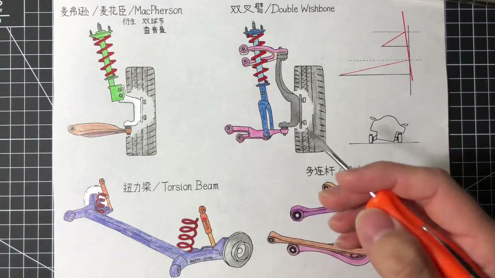
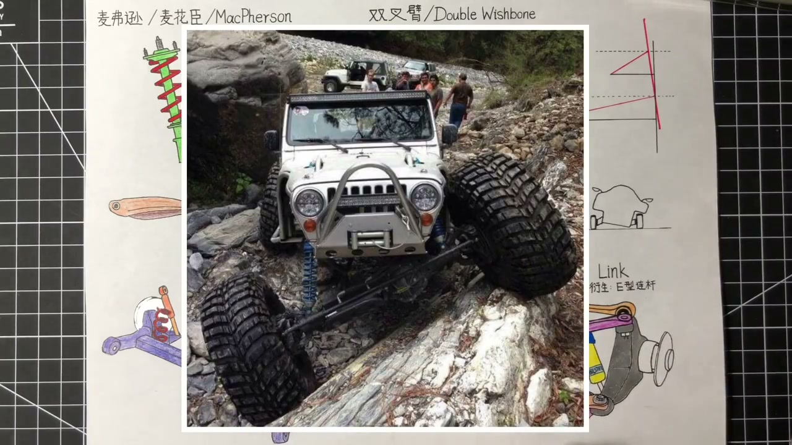
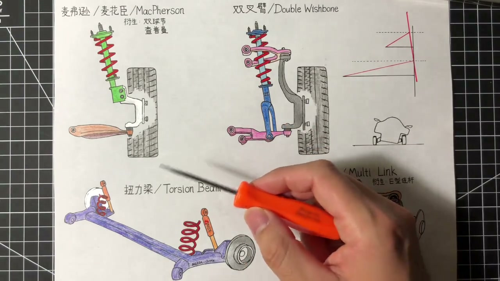
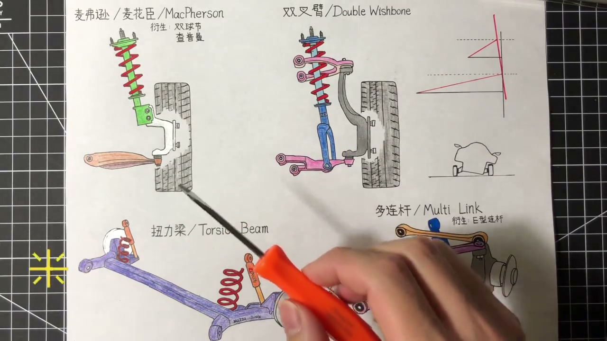
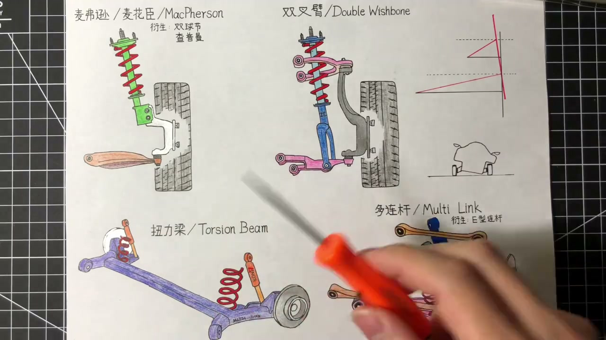

01
中文
车在崎岖路面行驶，就像你在狂风暴雨中撑着一把大伞。
EN
Driving a rough road is like holding a big umbrella in a storm.
表达提示rough road（崎岖路面）

Scene English · 汽车 · 悬架
Suspension Types (1): MacPherson and Double Wishbone
🎧 语音讲解
The Umbrella Analogy
情境车在崎岖路面行驶好比风雨中撑大伞：天气是路况，伞是轮胎，你是悬挂。抓轮胎的手越多，每只手承受的压力越小、负责的工作越单一，轮子越稳。悬挂好坏就是看抓住轮胎的手多还是少，两只手打伞总比一只手稳。悬挂形式只是基础，调教至关重要。
车在崎岖路面行驶，就像你在狂风暴雨中撑着一把大伞。
Driving a rough road is like holding a big umbrella in a storm.
表达提示rough road（崎岖路面）
天气是路况，大伞是轮子，而你就是悬挂。
Weather is the road, the umbrella is the wheel, and you are the suspension.
表达提示suspension（悬挂）
抓住轮子的手越多，每只手承受的压力就越小，轮子就越稳。
More hands on the wheel means less load each, and a steadier wheel.
表达提示steady（稳的）
悬挂形式只是表现的基础，工程师的精心调教同样重要。
The layout is just a baseline—tuning matters just as much.
表达提示tuning（调教）
rough road（崎岖路面
suspension（悬挂

Three Families of Suspension
情境悬挂分三类：独立悬挂（每个轮子一套自己的悬挂系统，互不干扰，好比一人一把伞）；非独立悬挂（左右两轮用一根硬轴粗暴连接，一个轮子有动静立刻影响另一个，好比两人打一把伞）；半独立悬挂介于两者之间，典型如扭力梁。
独立悬挂是每个轮子都有一套自己的悬挂系统，互不干扰。
Independent suspension gives each wheel its own setup—no cross-talk.
表达提示independent（独立的）
非独立悬挂是左右两个轮子通过一根硬轴连接在一起，一个轮子有动静立刻影响另一个。
Non-independent suspension links the wheels with a rigid axle—motion on one side hits the other.
表达提示rigid axle（硬轴）
半独立悬挂介于两者之间，典型的例子就是扭力梁。
Semi-independent sits in between—the torsion beam is the classic case.
表达提示torsion beam（扭力梁）
independent（独立的
rigid axle（硬轴

The MacPherson Strut
情境麦弗逊由美国人艾尔·麦弗逊发明。弹簧和避震是一个整体，再配一个三角形的下臂。它是典型的一只手撑伞，控制轮子的手已经做到最少，再少轮子就要掉了。运动基本直上直下，不太能随车体侧倾改变外倾角保持轮胎最大接触。
麦弗逊的弹簧和避震是一个整体，再配合一个三角形的下臂。
A MacPherson strut is a coil-over unit plus a triangular lower arm.
表达提示coil-over（弹簧避震一体）
它是典型的一只手撑伞，控制轮子的手已经做到最少。
It's the classic one-hand umbrella—minimum control points.
表达提示minimum（最少）
轮子的运动基本直上直下，不太能随车体侧倾改变外倾角。
The wheel mostly moves straight up and down, unable to adjust camber with body roll.
表达提示camber（外倾角）
coil-over（弹簧避震一体
minimum（最少

MacPherson: Trade-Offs
情境缺点：对轮子运动轨迹缺乏严格控制，激烈驾驶和极端路况下抓地力表现不好。优点：最大程度精简悬挂部件，做到了轻（簧下质量轻）、造价低、保养便宜；结构让出空间给驱动轴安装，天然对前驱友好；整体很窄不占横向空间，给发动机舱留更多空间。
因为缺乏对轮子轨迹的严格控制，它在激烈驾驶和极端路况下抓地力表现不好。
With loose wheel-path control, grip suffers in hard driving and extreme conditions.
表达提示grip（抓地力）
它最大程度精简了悬挂部件，做到了轻，而且是簧下质量的轻。
It trims parts to the minimum—genuinely light unsprung mass.
表达提示unsprung mass（簧下质量）
结构上这一块非常空，正好给驱动轴安装留足了空间，天然对前驱友好。
That open pocket leaves room for a driveshaft—naturally FWD-friendly.
表达提示driveshaft（驱动轴）
它整体非常窄，不占用横向空间，给发动机舱留出更多空间。
It's slim, freeing up lateral room for the engine bay.
表达提示lateral（横向的）
grip（抓地力
unsprung mass（簧下质量

MacPherson Variants
情境麦弗逊有很多变种：常见把弹簧和避震分开布局节省高度；用在后悬挂的变种会多一根纵向连杆固定指向（后轮没转向机构）。双球节悬挂把三角下臂换成两根独立连杆分摊横向纵向的力，宝马很多前悬挂在用。查普曼悬挂是莲花创始人设计的，把驱动轴也作为悬架连杆一部分，现只在菲亚特500X和吉普自由侠后悬挂使用。
双球节悬挂就是在麦弗逊基础上，把三角形的下臂换成两根独立的连杆。
A double-joint strut swaps the A-arm for two separate links.
表达提示double-joint（双球节）
两根连杆分摊了原来下臂单独承受的横向纵向的力，轮子动态控制有所提升。
Two links share the loads, improving wheel control.
表达提示share the load（分摊载荷）
查普曼悬挂是莲花创始人设计的，用驱动轴和一根连杆代替三角下摆臂。
Chapman suspension uses the driveshaft and a link instead of an A-arm.
表达提示Chapman（查普曼）
只要只有下臂没有上臂的悬挂，基本都可以看作麦弗逊的变种。
Any layout with only a lower arm is basically a MacPherson variant.
表达提示variant（变种）
double-joint（双球节
share the load（分摊载荷

The Double Wishbone
情境双叉臂是公认性能优于麦弗逊的悬挂形式，由一上一下两个叉臂组成。麦弗逊的避震一个人干了两份活：既要当避震又要充当上百臂角色；双叉臂中避震只负责支撑车身和过滤震动，轮子的转向和轨迹控制完全由上下两个叉臂负责。
双叉臂是公认在性能上优于麦弗逊的悬挂形式。
The double wishbone is widely agreed to outperform the strut.
表达提示double wishbone（双叉臂）
它由一上一下两个叉臂组成，这就是双叉臂名字的由来。
It's built from an upper and lower wishbone—hence the name.
表达提示upper/lower wishbone（上下叉臂）
避震只需要负责支撑车身和过滤震动，轮子的转向和轨迹控制完全由上下两个叉臂负责。
The damper just supports and filters; the wishbones handle steering and wheel path.
表达提示filter vibration（过滤震动）
double wishbone（双叉臂
filter vibration（过滤震动

Dynamic Camber: The Key Trick
情境双叉臂最大优点：上臂短于下臂，轮子上下运动时不是直上直下而是带着角度走。过弯车身侧倾时，外侧轮往上走会形成负外倾角，正好与车身倾斜角度抵消，让轮胎保持与地面垂直、100%接触，抓地力最大化，这就是操控好。
双叉臂的上臂长度短于下臂，轮子往上运动时不是直上而是带着角度走的。
With a shorter upper arm, the wheel arcs as it travels—not straight up.
表达提示arc（弧线运动）
过弯车身侧倾，外侧轮子往上走形成负外倾角，正好和车身倾斜的角度相互抵消。
Cornering lean and the wheel's negative camber cancel out.
表达提示negative camber（负外倾角）
轮胎就能和地面保持90度、100%接触，抓地力最大化，操控自然好。
The tire stays 90° to the road with full contact—max grip, great handling.
表达提示full contact（完全接触）
arc（弧线运动
negative camber（负外倾角

Why Not Everything Uses It
情境为什么不是所有车都用双叉臂：第一贵，零件多、安装和维修人工都贵；第二用在前驱车前悬挂时避震刚好挡在传动轴路线上，需要做拱门形设计；第三横向占空间大，放前悬挂占发动机舱位置，放后悬挂占后备箱或第三排空间。
第一个原因就是贵：零件多，安装和维修的人工也都贵。
First, cost: more parts and pricier labor to install and service.
表达提示labor（人工费）
用在前驱车前悬挂时，避震正好挡在传动轴路线上，需要特别设计成拱门形状。
Up front, the damper blocks the driveshaft line—requiring an arch design.
表达提示arch（拱门形）
它横向占的空间大，放前悬挂占发动机舱，放后悬挂占后备箱或第三排空间。
It eats lateral room: engine bay up front, trunk or third row in back.
表达提示trunk（后备箱）
labor（人工费
arch（拱门形
说打伞比喻
说三类悬挂
说麦弗逊
说双叉臂
说动态外倾角
说选型
别被名字忽悠。
形式只是基础调教重要。
麦弗逊直上直下。
双叉臂贵且占空间。
簧下质量轻很重要。